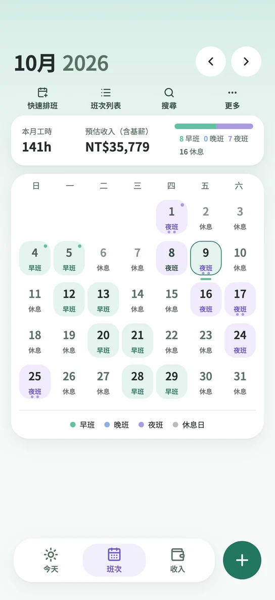

看班表、記工時，發薪前先估薪。
輪班、兼職或同時做幾份工作都能排進同一本行事曆。記錄實際上下班時間與休息，發薪前先估算薪資和加班費。
在 App Store 下載iPhone 和 iPad 可免費下載，可選擇訂閱 Pro。

安排輪班與休假
自訂早班、晚班和夜班的時間與顏色，將循環班表排進日曆。兼職或多份工作的班次也可以一起看。
記下實際上下班
記錄真正的上下班時間、無薪休息和補助。交接備註、照片和待辦可留在對應班次。
按發薪週期查看預估收入
設定薪資與加班規則後，按發薪週期查看預估薪資，再登記實際到帳金額。
做二休二怎麼排？
看四天一循環的班表範例，以及跨午夜和臨時換班時怎麼記。
基本排班、工時與薪資估算免註冊即可使用。Pro 提供提醒、匯出和備份功能。
在 App Store 下載